fit men cook
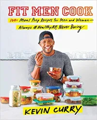
With more than a hundred meal prep recipes, this book could keep you eating delicious and healthy food all year. Fitness influencer Curry tells his personal story and provides his ten commandments of meal prep.
the plantiful plate
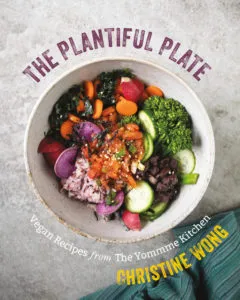
I’m all about “eating the rainbow” and also puns, so this cover caught my eye on a list of upcoming releases. When I saw it was from the creator of yommme.com, I knew it would be a must-buy for 2019.
dressing on the side
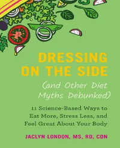
When it comes to dieting news, there’s a lot of misinformation out there. This book helps tackle the major diet myths and provides science-based info to help you reach your goals, whatever they may be.
30-minutes cooking
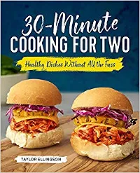
Meet your new go-to recipes. For weeknights when time is tight and dishes need to be minimal, these fast dinners for two will come to the rescue. Grill up protein-packed salads, throw together delicious grain bowls.
the zune cafe
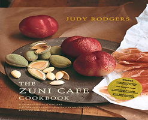
Since its introduction, in the late nineteen-eighties, the roast chicken served at San Francisco’s Zuni Café has earned a reputation as the best roast chicken in the world—crisp-skinned, impossibly juicy.
momofuku
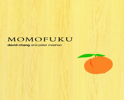
For many accomplished restaurant chefs, authoring a cookbook is just another checkbox on the to-do list of culinary celebrity, something to fit in after headlining a charity auction but before doing a stint on reality TV.
FranklinBBQ
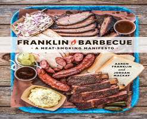
There are a handful of conventional recipes in this book—a few sauces, a coleslaw, some beef ribs, your usual barbecue accoutrements. But the big one in “Franklin Barbecue,” the singular one this book.
SaltFatAcidHeat
.png)
Reference books, almost by definition, aren’t meant to be read straight through; they’re index-driven, drily instructive knowledge-delivery mechanisms. They’re certainly not supposed to do what “Salt, Fat, Acid, Heat”
zero sugar diet
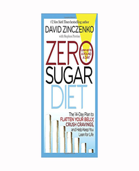
David Zinczenko, creator of Eat This, Not That! and New York Times bestselling author, wrote the Zero Sugar Diet to confront the two main issues that are making weight loss so difficult and pitting our own bodies against us.
Veggie Lean in 15
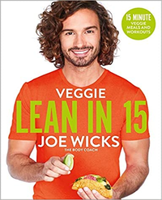
Get ready for Joe's vegetarian take on Lean in 15: The Shift Plan, which is the bestselling diet book of all time. Inside are a hundred flavour-packed vegetarian recipes, many of which are also vegan, plus three exclusive Body Coach HIIT workouts and a bonus abs workout.
raw chi
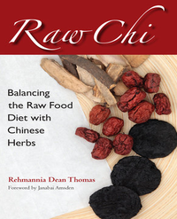
Raw Chi discusses a breakthrough in health understanding, showing readers how to bridge the gap between the raw foods diet and Traditional Chinese Medicine (TCM)Offering an overview of the nature of foods and herbs used in TCM (ginseng, aged citrus peel, cinnamon twig, licorice root, and many others) in addition to sections dedicated to men’s and women’s health,
fast food notation
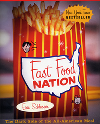
I was an occasional fast food eater. I always knew fast food was bad for me, but it tasted soo good! Plus, it was incredibly convenient. Did you know that for every 22,174 American citizens there is a McDonald’s waiting to serve? That might surprise you given that for every hospital in America there are twice as many people waiting in line.
FIND US ON SOCIAL MEDIA